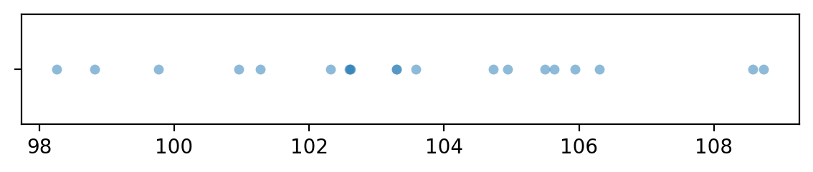
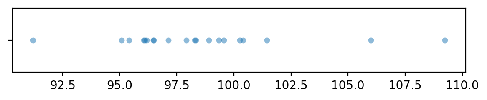

One-sample z-test for the mean#
The goal of the one-sample \(z\)-test to check if the mean \(\mu\) of an unknown population \(X \sim \mathcal{N}(\mu, \sigma_0)\), equals the mean \(\mu_0\) of a theoretical distribution \(X_0 \sim \mathcal{N}(\mu_0, \sigma_0)\). Note we assume that standard deviation of the unknown population \(X\) is known and equal to the standard deviation of the theoretical population \(\sigma_0\). We discussed this hypothesis test in notebooks/34_analytical_approx.ipynb.
import matplotlib.pyplot as plt
import numpy as np
import seaborn as sns
%matplotlib inline
%config InlineBackend.figure_format = 'retina'
Data#
One sample of numerical observations \(\mathbf{x}=[x_1, x_2, \ldots, x_n]\).
Modeling assumptions#
We model the unknown population as…
and the theoretical distribution is…
We assume the population is normally distributed \(\textbf{(NORM)}\), or the sample is large enough \(\textbf{(LARGEn)}\).
We also assume that the variance of the unknown population is known and equal to the variance of the theoretical population under \(H_0\)
Hypotheses#
\(H_0: \mu = \mu_0\) and \(H_A: \mu \neq \mu_0\), where \(\mu\) is the unknown population mean, \(\mu_0\) is the theoretical mean we are comparing to.
Statistical design#
for \(n=5\) …
for \(n=20\) …
Test statistic#
Compute \(z = \frac{\overline{\mathbf{x}} - \mu_0}{\sigma_0/\sqrt{n}}\), where \(\overline{\mathbf{x}}\) is the sample mean, \(\mu_0\) is the theoretical population mean, \(\sigma_0\) is the known standard deviation.
Sampling distribution#
Standard normal distribution \(Z \sim \mathcal{N}(0,1)\).
P-value calculation#
from stats_helpers import ztest
%psource ztest
To perform the one-sample \(z\)-test on the sample xs,
we call ztest(xs, mu0=..., sigma0=...),
with the ...s replaced by the mean and standard deviation parameters of the distribution under \(H_0\).
Examples#
For all the examples we present below, we assume the theoretical distribution we expect under the null hypothesis, is normally distributed with mean \(\mu_{X_0}=100\) and standard deviation \(\sigma_{X_0} = 5\):
from scipy.stats import norm
muX0 = 100
sigmaX0 = 5
rvX0 = norm(muX0, sigmaX0)
Example A: population different from \(H_0\)#
Suppose the unknown population is normally distributed with mean \(\mu_{X_A}=104\) and standard deviation \(\sigma_{X_A} = 3\):
muXA = 104
sigmaXA = 3
rvXA = norm(muXA, sigmaXA)
Let’s generate a sample xAs of size \(n=20\) from the random variable \(X = \texttt{rvXA}\).
np.random.seed(42)
# generate a random sample of size n=20
n = 20
xAs = rvXA.rvs(n)
xAs
array([105.49014246, 103.5852071 , 105.94306561, 108.56908957,
103.29753988, 103.29758913, 108.73763845, 106.30230419,
102.59157684, 105.62768013, 102.60974692, 102.60281074,
104.72588681, 98.26015927, 98.8252465 , 102.31313741,
100.96150664, 104.942742 , 101.27592777, 99.7630889 ])
import seaborn as sns
with plt.rc_context({"figure.figsize":(7,1)}):
sns.stripplot(x=xAs, jitter=0, alpha=0.5)

To obtain the \(p\)-value, we first compute the observed \(z\)-statistic, then calculate the tail probabilities in the two tails of the standard normal distribution \(Z\sim\mathcal{N}(0,1)\).
obsmean = np.mean(xAs)
se = sigmaX0 / np.sqrt(n)
obsz = (obsmean - muX0) / se
rvZ = norm(0,1)
pvalue = rvZ.cdf(-obsz) + 1-rvZ.cdf(obsz)
obsz, pvalue
(3.1180664906014357, 0.0018204172963375287)
The helper function ztest in the stats_helpers module performs
exactly the same sequence of steps to compute the \(p\)-value.
from stats_helpers import ztest
ztest(xAs, mu0=muX0, sigma0=sigmaX0)
0.0018204172963375855
The \(p\)-value we obtain is 0.0018 (0.18%),
which is below the cutoff value \(\alpha=0.05\),
so our conclusion is we reject the null hypothesis:
the mean of the sample xAs is not statistically significantly different from the theoretically expected mean \(\mu_{X_0} = 100\).
Example B: sample from a population as expected under \(H_0\)#
# unknown population X = X0
rvXB = norm(muX0, sigmaX0)
Let’s generate a sample xBs of size \(n=20\) from the random variable \(X = \texttt{rvX}\),
which has the same distribution as the theoretical distribution we expect under the null hypothesis.
# np.random.seed(32) produces false positie
np.random.seed(31)
# generate a random sample of size n=20
n = 20
xBs = rvXB.rvs(n)
xBs
array([ 97.92621393, 98.33315666, 100.40545993, 96.04486524,
98.90700164, 96.18401578, 96.11439878, 109.24678261,
96.47199845, 99.56978983, 101.43966651, 99.34306739,
95.08627924, 95.40604357, 105.99717245, 98.29312879,
91.20696344, 100.25558735, 97.14035504, 96.49716979])
import seaborn as sns
with plt.rc_context({"figure.figsize":(7,1)}):
sns.stripplot(x=xBs, jitter=0, alpha=0.5)

from stats_helpers import ztest
ztest(xBs, mu0=muX0, sigma0=sigmaX0)
0.17782115942197962
The \(p\)-value we obtain is 0.18, which is above the cutoff value \(\alpha=0.05\)
so our conclusion is that we’ve failed to reject the null hypothesis:
the mean of the sample xBs is not significantly different from the theoretically expected mean \(\mu_{X_0} = 100\).
Effect size estimates#
Discussion#
Links#
CUT MATERIAL#
# NOT GOOD: because we can't specify sigma0 manually;
# the statsmodels function uses sample std instead of sigmaX0
# from statsmodels.stats import weightstats
# weightstats.ztest(x1, x2=None, value=0)